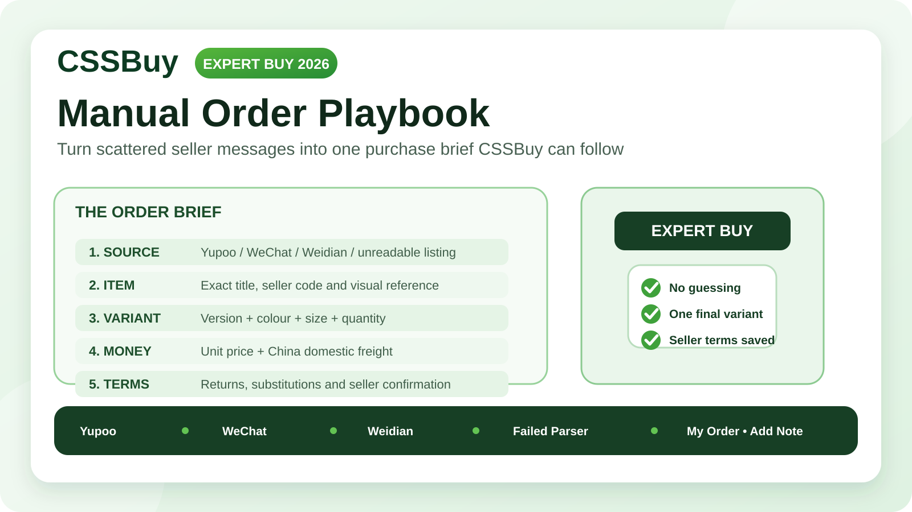

CSSBuy Expert Buy Guide 2026: A Manual-Order Playbook for Yupoo, WeChat and Unreadable Listings
A product page that CSSBuy can read automatically is the easy case. The harder cases are the ones serious reverse buyers eventually meet: a Yupoo album with no checkout button, a WeChat seller who sends a price in chat, a Weidian listing that does not load cleanly, or a marketplace page that CSSBuy’s parser cannot retrieve. Those are not necessarily impossible purchases. They are information problems.
CSSBuy’s current Expert Buy page is built for that gap. Instead of relying on a marketplace page to supply every field automatically, the buyer manually provides the item URL, title, images, note, price in RMB, Chinese domestic shipping and quantity. CSSBuy’s current Buy For Me instructions also tell buyers to try Expert Buy when an item cannot be searched normally.
The important part is learning how to turn a messy seller conversation into an order brief that another person can purchase without guessing. This guide focuses on that handoff.
Expert Buy is for incomplete commerce, not incomplete thinking
Normal link purchasing works because the seller page usually supplies product identity, price, variants and quantity. Expert Buy removes part of that structure. CSSBuy can still place the order, but the buyer must replace the missing structure with clear instructions.
Before submitting anything, ask one question: could a buyer who has never spoken to the seller identify the exact item, exact version, exact quantity and expected domestic cost from the information I am providing? If the answer is no, the order is not ready.
Build the order brief before opening the form
Create a small record outside CSSBuy first. Use six fields: seller source, item identity, variant, quantity, unit price and domestic shipping. Add a seventh field for special instructions only when something genuinely needs explanation.
This prevents a common failure pattern. Buyers often start entering an order while still negotiating, then update one field but forget another. The screenshot shows one colour, the note names another, and the price belongs to an older quote.
Finish the seller conversation first. Then make one final version of the order brief and treat it as the purchasing instruction.
Make the item identity impossible to confuse
CSSBuy’s Expert Buy form currently asks for an item URL and title, and it allows images to be added. Use all three as separate identifiers instead of repeating the same vague description.
The source tells the purchasing agent where the item came from. The title tells them what the item is. The image confirms the visual target.
For a Yupoo seller, use the specific product reference rather than a general seller page when possible. For WeChat, where there may be no public product page, CSSBuy’s official instructions say buyers can use an uploaded image link as the item-link reference. The principle is simple: provide a stable visual reference tied to the exact product you discussed.
A title such as “black jacket” is weak. A stronger title uses the seller’s model name, collection name or internal product code. If the seller uses a code in chat, preserve it.
Variant instructions should read like a specification
Size and colour create a large share of manual-order mistakes because sellers may use labels that look familiar but mean different things.
Do not write only “M” if the seller offers several versions. Write the complete choice: version, colour, size and any batch or material distinction that affects the order. A useful note might say: “Version B, washed black, size M, no gift box.”
If sizing was chosen from measurements, keep the actual seller size you want CSSBuy to purchase. Do not ask the purchasing agent to recalculate your size unless you specifically want advice. The buying instruction should end with one unambiguous selection.
When the seller confirms a variation in chat, preserve a screenshot for your own records. If the warehouse arrival later looks wrong, you will have something concrete to compare against.
Separate unit price from domestic shipping
The current Expert Buy form separates price in RMB, Chinese domestic shipping and quantity. Its displayed total is based on unit price multiplied by quantity, plus domestic freight.
Manual sellers often quote numbers conversationally: “280 plus 10 shipping,” “560 for two shipped,” or “free shipping if you take three.” Those statements do not map to the form in the same way.
Convert the quote into a clean structure before submission. Record unit price, quantity and domestic freight separately. Then verify that the resulting total matches what the seller told you.
If the seller gives only an all-in domestic total, ask them to clarify the components when practical. Clear numbers make later changes easier to diagnose.
Never guess the domestic freight
If you do not know the Chinese shipping fee, do not silently enter zero because zero looks convenient.
Ask the seller. If the seller says freight depends on destination, explain that the item will be delivered to a China warehouse and request the domestic charge they expect. If the seller genuinely cannot confirm it in advance, make that uncertainty explicit in the note instead of pretending the fee is known.
The goal is not to eliminate every possible adjustment. It is to prevent an adjustment from looking like an unexplained discrepancy.
Treat seller chat as commercial evidence
CSSBuy’s current Expert Buy instructions are direct about private-channel risk. For sellers from WeChat, Yupoo or Weidian, CSSBuy warns that buyer protection may not exist in the way buyers expect from a protected marketplace. If CSSBuy pays a seller who then does not ship, or the seller refuses a return, CSSBuy says it may not be able to perform a chargeback and the buyer bears that risk.
That changes how you should prepare the purchase.
Before payment, confirm the exact item, price, domestic freight, quantity and return position in writing. If the seller says an item is final sale, record that before ordering. If the seller says exchanges are allowed only for defects, record that too.
The safest manual order is not the one with the most messages. It is the one where the decisive terms are clear before money moves.
Use notes for exceptions, not for the whole order
CSSBuy provides a Note field in Expert Buy and also lets buyers use Add Note during the purchase process. Notes are valuable, but a giant paragraph can make an order less clear.
Keep structured facts in the structured fields. Use the note for information that cannot be represented elsewhere: a seller contact name, a confirmed variant not visible on the page, a specific detail to verify, or a temporary seller price.
Avoid several possible sizes, several acceptable colours and “choose whichever is available.” That transfers your buying decision to the purchasing agent.
If you accept substitutes, define the rule precisely. For example: “First choice navy size L; if unavailable, do not substitute.” Or: “Black is acceptable only if navy is sold out; size must remain L.”
Know when to stop the order
Manual purchasing makes more products accessible, but accessibility is not the same as order quality.
Pause if the seller cannot identify the item consistently, the price changes every time you ask for confirmation, or the seller refuses to state domestic freight yet demands immediate payment. Also pause if the economic case is weak. A rare item may justify manual work and private-channel risk. A common product available through a normal marketplace listing usually does not.
Expert Buy is most useful when the seller source is genuinely hard to structure but the transaction itself is still understandable.
Three practical order patterns
The first pattern is a Yupoo catalogue. The page shows the product clearly but does not provide a normal checkout. Confirm the seller’s contact details, exact price, domestic shipping and desired variant. Use the specific product reference, a clear title and the confirmed terms in Expert Buy.
The second pattern is a WeChat-only seller. CSSBuy’s current instructions acknowledge that there may be no product link. In that case, create a visual reference for the item, then provide seller information, product details, price, domestic shipping and variant. Because the transaction lacks standard marketplace buyer protection, pre-payment confirmation matters even more.
The third pattern is an ordinary marketplace listing that CSSBuy cannot parse. Current CSSBuy product pages show a manual-order path when product information cannot be retrieved. Reconstruct the fields carefully from the original listing: exact title, variant, quantity, price and seller-side freight. Manual entry is a fallback for missing data, not permission to invent data.
After CSSBuy places the purchase
CSSBuy’s Buy For Me workflow says its team contacts the seller and purchases the ordered item. During that process, buyers can use Add Note when further details are needed, and CSSBuy may contact the buyer when information is incomplete.
If CSSBuy asks a question, answer the specific question with the final confirmed information. Do not reopen settled choices unless the seller has actually changed something.
Once the item reaches the warehouse, compare the warehouse information and QC photos against the order brief you created before purchase. Check the highest-risk attributes first: version, colour, size label, quantity and visible construction.
A clean pre-purchase record makes warehouse QC faster because you know exactly what “correct” means.
Build a manual-order decision rule
Use normal Buy For Me when CSSBuy can read the listing and the variant structure is clear. Use Expert Buy when the seller or product source is acceptable to your risk tolerance but the information must be entered manually. Use Ship For Me when you have already purchased the item yourself and only need the warehouse and forwarding stage.
Do not choose Expert Buy merely because a seller tells you to. Choose it because you understand where the purchasing handoff happens and you can supply the missing information accurately.
The final 60-second check
Before you submit, read the order as if you were the CSSBuy purchaser seeing it for the first time.
Can you identify the seller? Can you identify one exact product? Is there one exact variant? Is quantity clear? Does unit price multiplied by quantity plus domestic shipping match the seller’s confirmed total? Is the image tied to the same item? Are substitution rules explicit? Have you accepted the additional risk if the seller is a private-channel source without normal buyer protection?
If every answer is yes, the order is ready.
Expert Buy works best when you do the thinking before CSSBuy does the buying. The tool solves a technical problem: unstructured or unreadable seller information. Your job is to solve the communication problem. Turn scattered seller messages into one precise purchase brief, preserve the commercial evidence, and give the warehouse a clear standard to verify later.
That is how a manual reverse purchase becomes controlled rather than improvised.